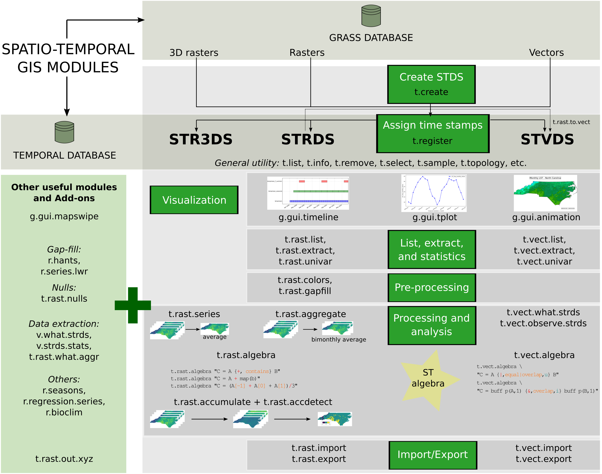

import os
import sys
import subprocess
# Ask GRASS GIS where its Python packages are
sys.path.append(
subprocess.check_output(["grass", "--config", "python_path"], text=True).strip()
)
# Import the GRASS GIS packages we need
import grass.script as gs
import grass.jupyter as gjTime series management and visualization
GRASS GIS
Time series
raster
Basic
Python
The temporal GRASS framework
GRASS GIS was the first FOSS GIS that incorporated capabilities to manage, analyze, process and visualize spatio-temporal data, as well as the temporal relationships among time series and maps within time series.
- The temporal GRASS framework is fully based on metadata and does not duplicate any dataset
- It is based on a snapshot approach, i.e., it adds time stamps to maps
- A collection of time stamped maps (snapshots) of the same variable are called space-time datasets or STDS
- Maps in a STDS can have different spatial and temporal extents
- Space-time datasets can be composed of raster, 3D raster or vector maps, and so we call them:
- Space time raster datasets (STRDS)
- Space time 3D raster datasets (STR3DS)
- Space time vector datasets (STVDS)
- These STDS objects will then be inputs and (optionally) outputs of temporal tools
How to specify time
- Time can be defined as intervals (start and end time) or instances (only start time)
- Time can be absolute (e.g., 2017-04-06 22:39:49) or relative (e.g., 4 years, 90 days)
Temporal tools
GRASS temporal tools are named and organized following GRASS core naming scheme. In this way, we have:
- t.*: general tools to handle STDS of all types
- t.rast.*: tools that deal with STRDS
- t.rast3d.*: tools that deal with STR3DS
- t.vect.*: tools that deal with STVDS
Temporal framework and workflow

Setup
To run this tutorial locally or in Google Colab, you should install GRASS GIS 8.4+, and download the daily MODIS LST project. This project contains average daily MODIS LST data reconstructed by mundialis GmbH & Co. KG based on Metz et al (2017).
Follow the Fast track to GRASS GIS and GRASS in Colab tutorials to get you started.
In this first tutorial of the “Time series in GRASS GIS” series, we will learn the basics of time series management:
- creation
- different ways of assigning time stamps, i.e., registering
- getting info
- listing and selection
- descriptive stats
- visualizations
Hands-on
We begin by loading GRASS package:
Now we are ready to start a GRASS GIS session in the downloaded project:
path_to_project = "eu_laea/italy_LST_daily"
# Start the GRASS GIS Session
session = gj.init(path_to_project)Explore the data in the mapset
Let’s first explore what we have within the italy_LST_daily mapset and display a raster map using the InteractiveMap class from grass.jupyter library.
# List raster elements
rast = gs.list_grouped(type="raster", pattern="lst*")['italy_LST_daily']
rast[0:10]# Display raster map with interactive class
lst_map = gj.InteractiveMap(use_region=True, tiles="CartoDB.DarkMatter")
lst_map.add_raster("lst_2014.005_avg")
lst_map.show()Create a time series
When working with the temporal framework, the first step is to create the time series object or STDS. This object is basically a container for maps that are already imported into or linked to our GRASS project, we are not duplicating any data. It consists of a SQLite table that will then store map names and metadata such as spatial extent, temporal extent, min and max values, semantic labels, etc.
To create the time series object, we use t.create and we need to define the type (strds, stvds or st3ds), the temporal type (absolute or relative), the output or name of the time series object, a title and a description.
# Create time series
gs.run_command("t.create",
type="strds",
temporaltype="absolute",
output="lst_daily",
title="Average Daily LST",
description="Gap filled average daily MODIS LST in Celsius - 2014-2018")With t.list we check the object was indeed created and with t.info we can explore details about this recently created object.
# Check it is created
gs.run_command("t.list",
type="strds")# Check time series metadata
print(gs.read_command("t.info",
input="lst_daily"))Since we have not yet registered our LST maps in the time series object, it is empty, i.e., there is no metadata to show.
Assign time stamps: register maps
To actually fill our time series object with the LST maps, we need to assign time stamps to these maps. For this we use the t.register tool. There are different ways of registering maps. We can either pass a sorted list of maps or a text file with one map per line and optionally start and end dates, and semantic labels. It is also important to understand if our data represent time intervals (e.g. precipitation over a period of time) or time instances (events), and in the case of intervals, if they are regular (e.g., monthly) or irregular, as all these will determine different t.register usage possibilities.
Here, we will exemplify the use of a list of maps and, since our data represent regular time intervals, we will use the start and increment options together with the i flag to actually create the intervals.
# Get list of maps and print the first 5 elements
map_list = gs.list_grouped(type="raster", pattern="lst_201*")['italy_LST_daily']
map_list[0:6]# How many maps do we have?
len(map_list)# Register maps in strds
gs.run_command("t.register",
input="lst_daily",
maps=map_list,
increment="1 days",
start="2014-01-01",
flags="i")Let’s check the metadata once again, all fields should be populated now.
# Get info about the strds
print(gs.read_command("t.info",
input="lst_daily",
flags="g"))The tool t.info can also provide information of single maps, e.g.:
# Get info about a map within the strds
gs.run_command("t.info",
input="lst_2014.005_avg",
type="raster")
Note
Compare with the output of r.info map=lst_2014.005_avg.
Different ways of registering maps
According to the data you are working with, there might be different options to properly register the data within time series objects. The case presented above is one of the easiest, i.e., data represents regular intervals. So, start, increment and i did it.
Let’s suppose however, we now work with the so called 8-day or 16-day products. These also represent interval time, but the last map of each year has a different granularity. This is because the aggregation cycle restarts every January 1st, and also because we have leap years. In this case, the option increment="8 days" will give wrong results. The solution is to create a text file containing map name, start and end time, and pass it with the file option.
Luckily, this can be done programmatically. Indeed, most data file names come with some indication of date that we can use to create our file. See for example this small python script or the shell example within t.rast.aggregate.ds manual. Furthermore, tools such as i.modis.import will create the registration file for you after importing products into GRASS GIS.
A similar case occurs when handling imagery data. Usually, they represent time instances (not intervals, i.e., no end date). Hence, to register imagery data, we might also need to create a text file. In this case, with map names and start time only. Tools like i.sentinel.import or i.landsat.import can create this file for you when you import data into GRASS GIS.
Note
Have a look at the t.register manual page and a dedicated wiki with further examples.
Time series visualization
There are different tools for time series visualization in GRASS GIS. In this tutorial, we will explore those within the Graphical User Interface.
Timeline plot
The timeline plot, g.gui.timeline, is a graphic visualization of the temporal and (optionally) spatial granularity and extent of a STDS. It is very useful to compare granularities and observe topological relationships among STDS.
!g.gui.timeline inputs=lst_dailyTemporal plot for Trento, Italy
The temporal plot tool, g.gui.tplot, allows to plot the time series values of raster or vector space-time datasets. In this case, we will plot the LST time series for the city of Trento, Italy. In the graphical interface of g.gui.tplot, the point coordinates can be typed directly, copied from the map or selected interactively in the map display.
# LST time series plot for Trento city center
!g.gui.tplot strds=lst_daily coordinates=4410837.455830389,2559852.473498233 title="Trento daily LST" xlabel="Time" ylabel="LST (C)" size=800,500 output=trento.png If instead you want to query and plot time series of several points in a vector map, you might want to check t.rast.what.
gs.run_command("v.random",
output="random_points",
npoints=5,
seed=54)
gs.run_command("t.rast.what",
points="random_points",
strds="lst_daily",
where="start_time >= '2018-09-30'",
layout="col",
flags="n")Lists and filtering
There are different tools dedicated to listing within the temporal framework:
- t.list to list STDS and maps registered within the temporal database whether they belong to a STDS or not,
- t.rast.list for maps in raster time series, and
- t.vect.list for maps in vector time series.
The variables that can be used to perform listing and filtering differ among raster and vector time series:
- STRDS: id, name, creator, mapset, temporal_type, creation_time, start_time, end_time, north, south, west, east, nsres, ewres, cols, rows, number_of_cells, min, max.
- STVDS: id, name, layer, creator, mapset, temporal_type, creation_time, start_time, end_time, north, south, west, east, points, lines, boundaries, centroids, faces, kernels, primitives, nodes, areas, islands, holes, volumes.
Let’s see some listing examples:
# Check list of STRDS in the mapset
print(gs.read_command("t.list",
type="strds"))# Check raster maps in the temporal database
print(gs.read_command("t.list",
type="raster",
where="start_time >= '2018-06-30'"))With the Python Pandas package we can simply read in the output of t.rast.list as a DataFrame:
import pandas as pd
# Check the list of maps in the STRDS
pd.DataFrame(gs.parse_command("t.rast.list", input="lst_daily", format="csv"))# Check min and max per map
pd.DataFrame(gs.parse_command("t.rast.list",
input="lst_daily",
columns="name,min,max",
format="csv"))# Maps with minimum value lower than or equal to 10
pd.DataFrame(gs.parse_command("t.rast.list",
input="lst_daily",
order="min",
columns="name,start_time,min",
where="min <= '10.0'",
format="csv"))# Maps with maximum value higher than 30
pd.DataFrame(gs.parse_command("t.rast.list",
input="lst_daily",
order="max",
columns="name,start_time,max",
where="max > '30.0'",
format="csv"))# Maps between two given dates
pd.DataFrame(gs.parse_command("t.rast.list",
input="lst_daily",
columns="name,start_time",
where="start_time >= '2015-05' and start_time <= '2015-08-01 00:00:00'",
format="csv"))# Maps from January
pd.DataFrame(gs.parse_command("t.rast.list",
input="lst_daily",
columns="name,start_time",
where="strftime('%m', start_time)='01'",
format="csv"))Most tools within the temporal framework have the where option. So, the same filtering can be applied in tools to determine maps that will be processed.
Descriptive statistics
The tool t.rast.univar calculates univariate statistics from the non-null cells of each raster map within STRDS. By default it returns the name of the map, the start and end date of the dataset and the following values: mean, minimum and maximum value, mean_of_abs, standard deviation, variance, coeff_var, number of null cells, total number of cells.
# Print univariate stats for maps within STRDS
print(gs.read_command("t.rast.univar",
input="lst_daily",
nprocs=6))Using the e flag it can calculate also extended statistics and the output can be saved in a text file to be read elsewhere.
# Write extended univariate stats output to a csv file
gs.run_command("t.rast.univar",
flags="e",
input="lst_daily",
output="ext_stats_lst_daily.csv",
separator="comma",
nprocs=6)The Python pandas package allows us to read this file and then make plots.
# Read the csv and plot
lst = pd.read_csv("ext_stats_lst_daily.csv", usecols=[2, 4, 5, 6])
lst['start'] = pd.to_datetime(lst.start, format="%Y-%m-%d", exact=False)
lstLet’s have a look at the plot:
lst.plot.line(0, [1,2,3], subplots=False);References
- Metz, M., Andreo, V., Neteler, M. 2017. A New Fully Gap-Free Time Series of Land Surface Temperature from MODIS LST Data. Remote Sensing 9(12), 1333. DOI.
- Gebbert, S., Pebesma, E. 2014. TGRASS: A temporal GIS for field based environmental modeling. Environmental Modelling & Software 53, 1-12. DOI.
- Gebbert, S., Pebesma, E. 2017. The GRASS GIS temporal framework. International Journal of Geographical Information Science 31, 1273-1292. DOI.
- Temporal data processing wiki page.
The development of this tutorial was funded by the US National Science Foundation (NSF), award 2303651.